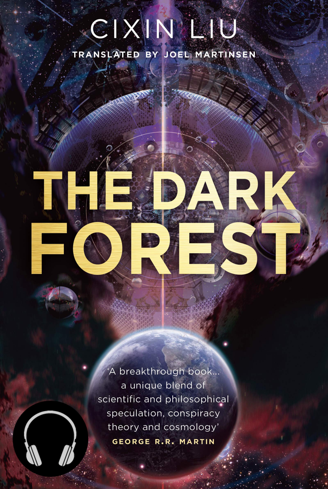
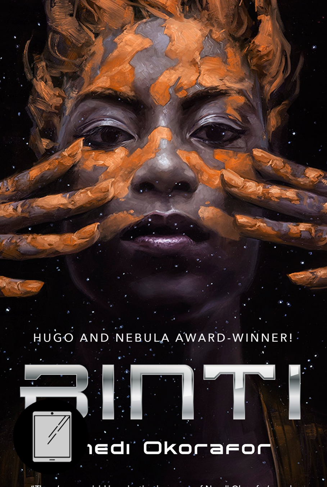
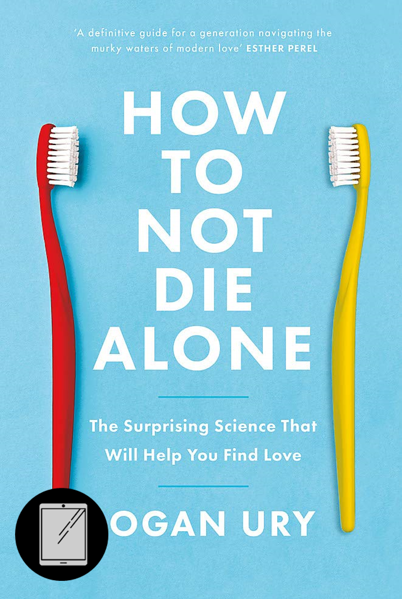
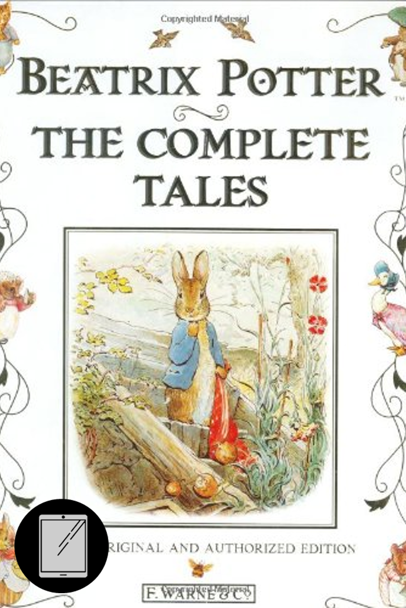
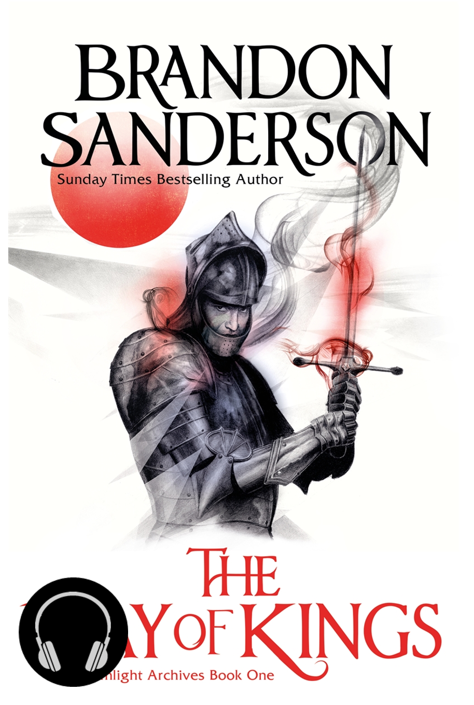

Books I Read in 2022 (Part 1)
For the past three years, I've made the same resolution: to read 20 books. Unfortunately, I've failed it
two out of three times. But that's not the important part.
The resolution was meant to challenge myself to read more regularly. As a child, I read constantly, but as an adult, I struggle to find the time and motivation. While I didn't meet my 20-book goal in 2020 nor 2022, I still read more than I would have otherwise, which is a success in itself.
My resolution for 2023 is the same, and I'm determined to make it a 20-book year (famous last words...). Tracking my progress and comparing it to previous years is a big motivator for me. So, I've decided to write a series of quick book reviews on the books I read last year. This first half covers half of the 14 books I managed to read in 2022, and part 2 will follow soon.
WARNING: These reviews contain mild spoilers!
‘The Dark Forest’ by Cixin Liu

"Suppose a vast number of civilizations are distributed throughout the universe, on the order of the number of detectable stars. Lots and lots of them. The mathematical structure of cosmic sociology is far clearer than that of human sociology. The factors of chaos and randomness in the complex makeups of every civilized society in the universe get filtered out by the immense distance, so those civilizations can act as reference points that are relatively easy to manipulate mathematically. First: Survival is the primary need of civilization. Second: Civilization continuously grows and expands, but the total matter in the universe remains constant."
The second book in Liu’s ‘Remembrance of Earth’s Past’ series (following on from ‘The Three Body Problem’)
is a continuation of my favourite modern example of hard SciFi. This series is as much a thought experiment
as it is a narrative, with Liu exploring how humanity's first contact with an advanced alien race (the Tri
Solarans) could unfold. This installment follows Luo Ji, an astronomer and sociologist, as he's chosen to be
one of four 'Wallfacers' - individuals given almost unfettered access to the resources of the UN and world
governments in order to attempt to counter the encroaching Tri Solaran threat.
The book is not one for flashy set pieces and action scenes, but it's generally gripping and paced pretty well
considering how many extended explanations of scientific concepts are required. The middle of the book does slow
down noticeably, however, and needs some effor to push through. This conincides with an extended 'refusal of the
call' from our hero, which I often find difficult to stay engaged with; characters are inherently more interesting
when they do things.
The characterisation, though, is generally strong. The four Wallfacers are all distinct and have personalities that
influence and mesh well with their individual plans to hinder the Tri Solaran invasion. Shi Qiang (AKA Da Shi)
is one of the few characters to reappear from the first book. Shi has no scientific background and yet is easily one
of the smartest characters in a cast of PhDs, professors, and world-leaders. His intuitive, real-world (and very
believable) grasp of human behaviour sets him up as a perfect foil to the more technical main characters in both books.
The novel's 'B'-story follows a new character, Zhang Beihai, as he joins the UN's Space Force and becomes a key player in
their preparation for the invasion.
As a political commisar in the Chinese Army, he also serves as an interesting window into an aspect of Chinese culture I hadn't previously been aware of.
Female Characters
Science
Sophons
Dark Forest
I listened to this as an audiobook, and I want to mention the narrator, Bruno Roubicek. He does an excellent job
differentiating a large, international cast and manages the numerous foreign language terms and names very well.
A bad narrator can destroy an otherwise amazing audiobook, so his contribution can't be overlooked.
⭐ ⭐ ⭐ ⭐ ⭐ |
Liu is perhaps the pinnacle of modern science fiction
‘Binti’ by Nnedi Okorafor

"My tribe is obsessed with innovation and technology, but it is small, private, and, as I said, we don’t like to leave Earth. We prefer to explore the universe by traveling inward, as opposed to outward. No Himba has ever gone to Oomza Uni. So me being the only one on the ship was not that surprising. However, just because something isn’t surprising doesn’t mean it’s easy to deal with."
Binti was a very interesting viewpoint character and I enjoyed getting a window into her worldview. Her
internal conflict at leaving her home and travelling to an alien university is the lynchpin for much of the
narrative, and the anxieties this induces are explored by the Namibian-American Okorafor.
This is exascerbated by her being Himba, a real-world people from Northern Namibia. The book touches on some elements
of their culture - particularly the use of otjize, an ochre and butterfat mixture applied to skin and hair
for cosmetic, hygienic, and protective purposes. This is contrasted with advanced technology, such as the
astrolabe, a futuristic computer. The technology is presented as so far advanced that the main character is
able to have an almost instinctive interaction with it. The knowledge to operate the astrolabe isn't learnt
but bestowed. This type of relationship is typically depicted between people and the natural world in
simmilar literature, and the extension to technology in light of this shifted the focus for me from a two-way
street to being more about the way the Himba people depicted see and appraoch the world around them, natural
or artifical. The idea of preserving the culture of a relatively small ethnic group (currently ~50K
individuals) into the future is quite unique. Often, I feel that the emphasis is on the homogeneisation of
cultures into a single 'human empire', that is often heavily Westernised in its presentation.
Binti's character is discussed with constant reference to her status as an outsider, and this is emphasised
through interaction with the Khoush, a more prevalent human ethnic group (without a direct real world
counterpart, but which Okorafor has mentioned she intended as Arab). This Khoush's disregard for the Huimba
is the source of some intriguing conflict towards the start of the book, but as the narrative shifts away from
Earth and starts introducing living spaceships (a really well-done bit of worldbuilding) and aliens like wispy
spiders made of mist or the jellyfish-like Meduse, Binti's outsider character broke my immersion a bit.
I struggled to see why the Himba would be seen as outsiders any more than another human in an alien environment
and left the viewpoint feeling a bit forced.
This is especially pronounced as Binti interacts with the Meduse, who serve the role of antagonists in the story.
Meduse society is clearly based on tribal human society, and there is a focus on some of the similarities
between Binti and her Meduse counterparts. The Meduse work well as a foil for Binti's own 'outsider-ness',
but that internal conflict could have been handled better in the later part of the book for my liking.
⭐ ⭐ |
Interesting worldbuilding, but with some inconsistencies that broke my immersion
‘How Not to Die Along’ by Logan Ury

“Great relationships are built, not discovered. But our minds are often stuck in a trap, thinking that by combing through hundreds of options, we’ll be closer to knowing whether the one in front of us is 'right.'”
Fringilla nisl. Donec accumsan interdum nisi, quis tincidunt felis sagittis eget. tempus euismod.
Vestibulum ante ipsum primis in faucibus vestibulum. Blandit adipiscing eu felis iaculis volutpat
ac adipiscing accumsan eu faucibus. Integer ac pellentesque praesent tincidunt felis sagittis eget.
tempus euismod. Vestibulum ante ipsum primis in faucibus vestibulum. Blandit adipiscing eu felis
iaculis volutpat ac adipiscing accumsan eu faucibus. Integer ac pellentesque praesent. Donec accumsan
interdum nisi, quis tincidunt felis sagittis eget. tempus euismod. Vestibulum ante ipsum primis in
faucibus vestibulum. Blandit adipiscing eu felis iaculis volutpat ac adipiscing accumsan eu faucibus.
Integer ac pellentesque praesent tincidunt felis sagittis eget. tempus euismod. Vestibulum ante ipsum
primis in faucibus vestibulum. Blandit adipiscing eu felis iaculis volutpat ac adipiscing accumsan
eu faucibus. Integer ac pellentesque praesent. Blandit adipiscing eu felis iaculis volutpat ac
adipiscing accumsan eu faucibus. Integer ac pellentesque praesent tincidunt felis sagittis eget.
tempus euismod. Vestibulum ante ipsum primis in faucibus vestibulum. Blandit adipiscing eu felis
iaculis volutpat ac adipiscing accumsan eu faucibus. Integer ac pellentesque praesent.
⭐ ⭐ ⭐ ⭐ |
I have not died alone, so I can only assume the advice is pretty good
‘Eon: Rise of the Dragoneye’ and ‘Eona: Return of the Dragoneye’ by Alison Goodman

“You are wrong when you say there is no power in being a woman. When I think of my mother and the women in my tribe, and the hidden women in the harem, I know there are many types of power in this world...I found power in accepting the truth of who I am. It may not be a truth that others can accept, but I cannot live any other way. How would it be to live a lie every minute of your life? I don't think I could do it.”
A YA series set in a fantasy realm heavily inspired by East Asian cultures. This was a re-read for me
- I first read 'Eon' over a decade ago, before the sequel had even been published. It is one of the most
unique fantasy books I've ever read, and stuck with me so strongly that I just had to seek it out and finish
the series.
Eon the disabled girl pretending to be a boy (and experimenting with what is effectively hormone replacement :P)
Eona fills a similar role to Viola in 'Much Ado About Nothing'. She is disguised as a
Link to actual trans commentary
Lady Dela the Contraire
Ryko the Eunuch
Lots of twists and political intrigue
Feminist themes are strongly present - trans rep but not exactly the most empowering (imperial culture)
⭐ ⭐ ⭐ ⭐ |
An engaging world and narrative that allows exploration of a whole host of complex social issues
Unfortunately, the second book in the series, Eona, fails to include most of the elements that made the
first exceptional. Eona's magical abilities remove the impact of her disability, and leave her with no
long-lasting effects. This struck me as a missed opportunity to explore the effects of removing her
physical limitations and the associated discrimination on the character (e.g. survivor's guilt).
Eona abandons her male disguise and enters into a rather straightforward love triangle. In true YA style, this
relies on a series of misunderstandings that seemed a little out of place against the relatively serious
backdrop of a brewing war. I did enjoy the budding romance between Eona and Kygo, their relationship was
delicately developed but still managed to maintain a strong undercurrent of passion. Eona's enemies-to-lovers style
connection with Ido though never felt particularly deep with a predictable conclusion. Ido still feels like the villain
to me, with Lord Seddon's almost reptilian coldness not making much of an impression on me.
Lady Dela spends most of the book in disguise as a man, which could have been a chance to explore the psychological
challenges that come with the forced breakdown of her gender identity. Dela is a very small part of this book, and
it almost seems as if the author wasn't sure what to do with the character in this installment. A pity, as I'd
enjoyed her pragmatic, caring presence in the first book, and I was keen to see how that pragmatism was strained by
the forced change of scene from the familiarity of the imperial court.
By contrast, the conflict that arises between Eona and Ryko after they become magically bound to each other is pretty
engaging. The stress his loss of personal identity and self-reliance causes is explored well, and his character is
developed in the manner I had hoped for Eona and Dela.
For me, the series shifts from something novel and unexpected to a typical YA fantasy in the second instalment,
not giving space for the deep character development that made the first so unique. Don't mistake me: it's a great YA,
but I was expecting something that upturned more of the genre's traditional tropes.
⭐ ⭐ |
Could deserve 3 stars as a standalone, but I expected more after ‘Eon’
‘The Complete Tales’ by Beatrix Potter

“Once upon a time there was a frog called Mr. Jeremy Fisher; he lived in a little damp house amongst the buttercups at the edge of a pond. The water was all slippery-sloppy in the larder and in the back passage. But Mr. Jeremy liked getting his feet wet; nobody ever scolded him, and he never caught a cold!”
As a child, I can clearly recall my grandparents having a collection of audio cassettes of Potter's tales
that were kept in their car to entertain restive grandchildren. The calm voice telling stories of Peter
Rabbit, Jemima Puddle-Duck, Miss Tiggy-Winkle and Co. is a core memory.
Potter began writing her tales in letters to the children of her former governess in the late 19th Century,
before her first book 'The Tale of Peter Rabbit' was published in 1902. Over the next 30 years, she published
22 more books heavily inspired by her youth in the North of England and Scotland. Aside from her work as an
author-illustrator, Potter was a celebrated mycologist and farmer, and is credited with preserving large parts
of what is now the Lake District National Park.
Re-reading them as an adult, I was struck by the challenge the language presents for younger readers.
This is almost certainly a consequence of the fact the books are over a century old, but this also brings a
very traditionally British feel to the content. I appreciated the window into country living at the start of the
20th century, only emphasised by the gorgeous illustrations.
Each story is presented alongside a series of watercolours by Potter herself. As my memories of these stories are
of the audiobooks, seeing the prose properly illustrated for the first time was amazing. Even if I might still be
unsure precisely what a petticoat or a patty-pan are, the care and effort that went into crafting this feast for
the senses makes it a relaxing read for all ages.
⭐ ⭐ ⭐ |
Enduring set of children's stories with a nice dose of nostalgia
‘The Way of Kings’ by Brandon Sanderson

"“Life before death. Strength before weakness. Journey before destination. That was their motto, and was the First Ideal of the Immortal Words."
I'll end this first part of my reading blog with the most epic book I experienced in 2022. This is the first
time I've committed to reading one of Brandon Sanderson's __. I flirted with the first Mistborn book for a while
but it didn't grab me - a case of wrong time, wrong place, I think.
Sanderson's biggest appeal for me is in the strength and depth of his characterisation. I've criticised plenty of
the books above for characterisation, and
The slow reveal of backstories and lore throughout the entire run of this first installment in Sanderson's Stormlight Archive series
was clearly the work of a master. I was impaitient to learn more about each character
Every reveal was satisfying but led to more unanswered questions. Every focal character grew and changed over the novel. Every plot point was placed so finely and correctly that the flow of the story felt effortless.
⭐ ⭐ ⭐ ⭐ ⭐ |
Amazing worldbuilding! Phenomenal characterisation! Read it!